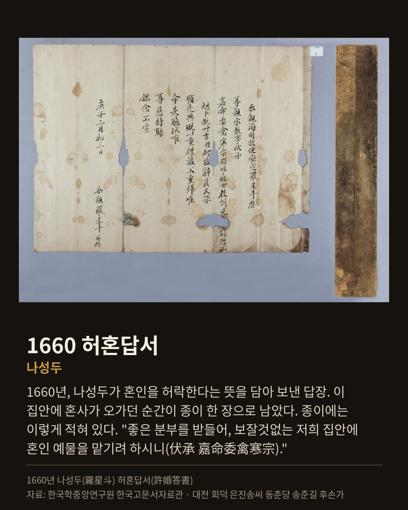
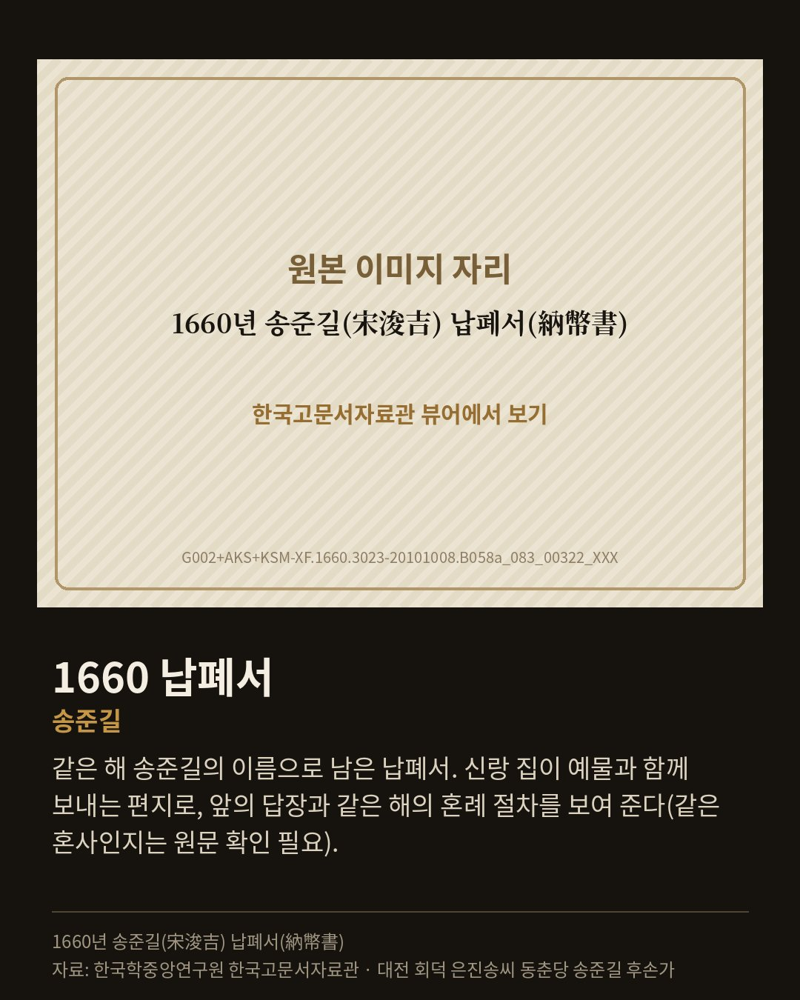
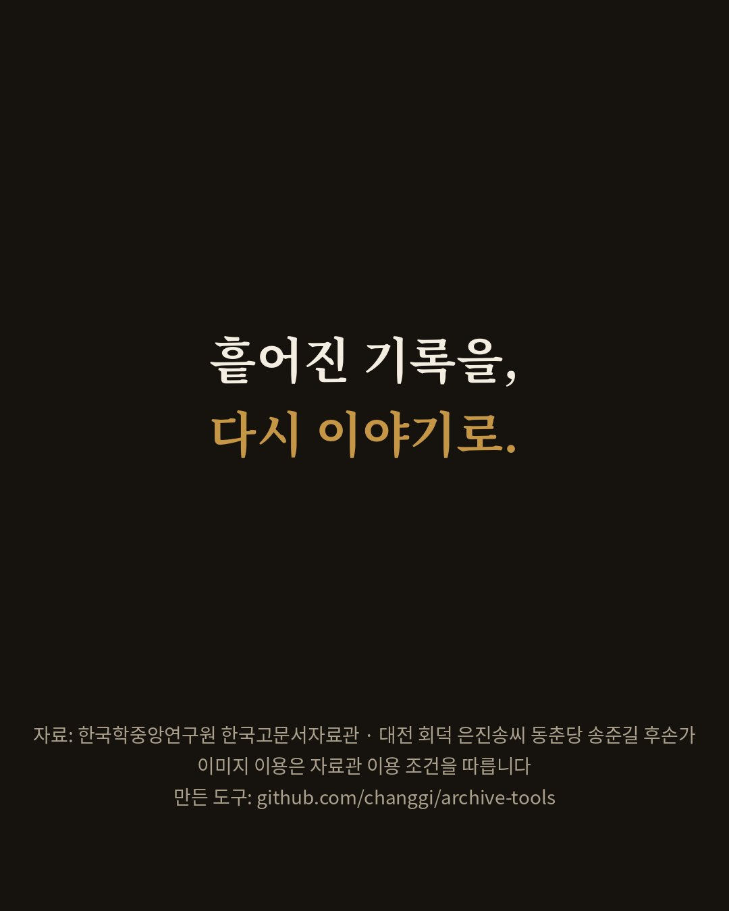

이미지 출처 — 예시의 고문서 사진은 한국학중앙연구원 한국고문서자료관 소장·제공 자료이며, 각 문서에 자료관 뷰어 원본 링크를 달았습니다. 자료관은 이미지 사용에 소장처 동의가 필요하다고 안내합니다(031-730-8873, 8876). 이 이미지를 다시 쓰려면 자료관에 문의하세요. 게재에 문제가 있으면 이슈 나 chgsong@naver.com으로 알려 주시면 바로 내리겠습니다.
홍보 영상
EP.1 흩어진 기록을, 다시 이야기로 1862년 송영로의 임명장 한 장에서 시작해 ① 수집 ② 큐레이션 ③ 에디팅 ④ 매개 ⑤ 패키징까지 83초 · 9:16 · 내려받기 · 자막
EP.2 만든 것 보기 말 한마디로 만들어진 전시 웹페이지·카드뉴스·활동지, 에디팅 전후, 두 집안 비교 48초 · 9:16 · 내려받기 · 자막
예시 세 가지 — 문중
③ 에디팅 후 혼인과 호적으로 보는 집안의 생활사
대전 회덕 은진송씨 동춘당 송준길 후손가 · 1660–1825 · 8점
Claude가 다듬은 이야기 문장으로 만든 전시·카드뉴스·활동지
③ 에디팅 전 송준길의 기록으로 본 생애
같은 소장처 · 1593–1671 · 6점
자동 선별·자동 캡션 초안 그대로 — 에디팅 전 상태. 같은 첩 이미지를 공유하는 낱장 문서는 하나만 골랐습니다
다른 소장처 땅과 관청 사이 — 문서로 보는 집안 살림
대전 무수동 안동권씨 유회당 권이진 종가 · 1695–1843 · 8점
문서유형(명문·고목·첩정…)으로 직접 정한 테마
예시 더 보기 — 사찰 · 마을 · 서원 · 박물관
문중(집안)이 아닌 곳에도 같은 방법이 통합니다. 예시마다 결과물(전시 웹페이지·카드뉴스·활동지·SNS 글), 영상(릴스 9:16·가로 16:9), 홍보 글을 한 세트로 만들었습니다.
EP.3 · 사찰 절을 짓고 다시 세운 기록 김천 직지사 · 문서 50건 중 8점
사적·중건기·상량문·헌답기 — 나무판과 종이에 남은 절의 건축사
EP.4 · 마을 섬마을에 내려온 약속 제주 애월 수산리 · 1784–1880 · 8점
정조의 윤음부터 마을의 향약·절목까지
EP.5 · 서원 서원을 지키고 꾸린 기록 함양 남계서원 · 1733–1940 · 8점
논밭 장부·완문·상량문·건물 배치도
EP.6 · 박물관 왕비의 편지 명성황후기념관 · 1888–1890 · 8통
명성황후가 민영소에게 보낸 한글 편지
이야기가 있는 기록 — EP.7–EP.16
문서명과 이미지 속에 서사가 있는 소장처 10곳을 골라, 질문으로 시작해 문서로 따라가고 한 문장으로 맺는 이야기로 만들었습니다. 왕실의 편지, 되찾은 제사 땅, 200년의 상소, 나아가지 않은 선비까지.
EP.7 · 박물관 왕실 가족의 편지 오죽헌·시립박물관 · 1665 무렵 · 편지 7통
“임금도 할머니에게 편지를 썼을까요?”
EP.8 · 문중 운조루의 시간 구례 오미 문화류씨 운조루 · 1659–1784 · 7점
“운조루를 지은 유이주, 그는 어떤 길을 걸어왔을까요?”
EP.9 · 문중 되찾은 제사 땅 거창 동계 정온 종가 · 1403–1825 · 6점
“조상의 제사 땅이 남의 장부에 들어가 버렸다면?”
EP.10 · 마을 섬마을의 호소 거제 일운 구조라리 · 1850–1912 · 8점
“섬마을 사람들은 무엇을 호소했을까요?”
EP.11 · 마을 윤음에서 금융조합까지 제주 애월 하가리 · 1781–1912 · 8점
“왕의 말씀에서 은행까지, 한 마을이 걸어온 길은?”
EP.12 · 사찰 기도와 살림의 기록 예천 용문사 · 1514–1879 · 8점
“불상 안에는 무엇이 들어 있을까요?”
EP.13 · 서원 200년의 상소 산청 덕천서원 · 1609–1814 · 6점
“한 스승을 높이기 위해, 200년 동안 상소를 올린 사람들이 있습니다.”
EP.14 · 문중 나아가지 않은 선비 논산 명재 윤증 종가 · 1654–1701 · 8점
“임금이 수십 번 불러도, 나아가지 않은 선비가 있습니다.”
EP.15 · 서원 서원을 움직인 사람들 안동 병산서원 · 1610–1811 · 7점
“서원을 움직인 사람들은 누구였을까요?”
EP.16 · 문중 학자의 벼슬길 광주 순암 안정복 종가 · 1607–1790 · 8점
“『동사강목』을 쓴 학자는 어떤 벼슬길을 걸었을까요?”
카드뉴스 한눈에



에디팅 전과 후
자동 초안 1825년 송영로의 호구단자 — 집안 식구를 관에 신고한 호적 서류. 에디팅 후 1862년 빙고별제 임명장을 받는 송영로의 이름이, 37년 앞선 이 호적 신고서에도 등장한다. 검토 비워 두면 모든 결과물에 "초안 — 원문 확인 전" 표시가 남습니다. 원문을 확인한 줄에만 확인을 넣으세요.
여러 소장처 비교 (대량 유사 연구)
예시에 쓴 소장처 16곳(문중·사찰·마을·서원·박물관) 4,934건을 같은 방식으로 정리해 비교했습니다. 문중에는 고신(임명장)이, 마을에는 절목(규정)이, 서원에는 장부가 많듯 소장처마다 남긴 기록의 결이 다릅니다.
직접 해 보기
/plugin marketplace add changgi/archive-tools
/plugin install aks-archive-harvester@changgi-archive-tools
💬 한국고문서자료관에서 유회당 권이진 종가 문서 받아줘
💬 이 집안 문서로 어떤 이야기를 만들 수 있을까?
💬 혼인과 호적 테마로 전시 웹페이지랑 카드뉴스 만들어줘
💬 대전 문중들을 비교 연구할 수 있게 패키지로 묶어줘
터미널에서 직접 실행하는 단계별 예제는 examples/README.md 에 있습니다.